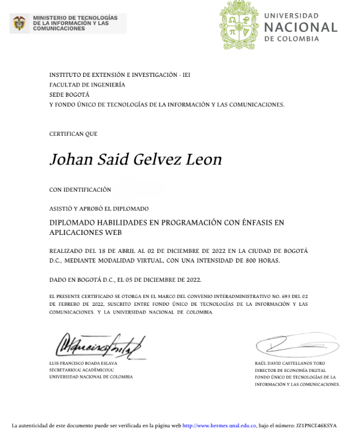
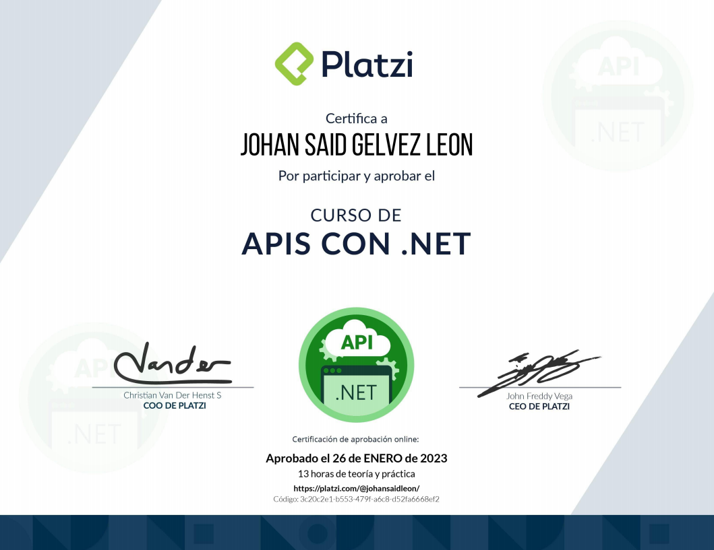
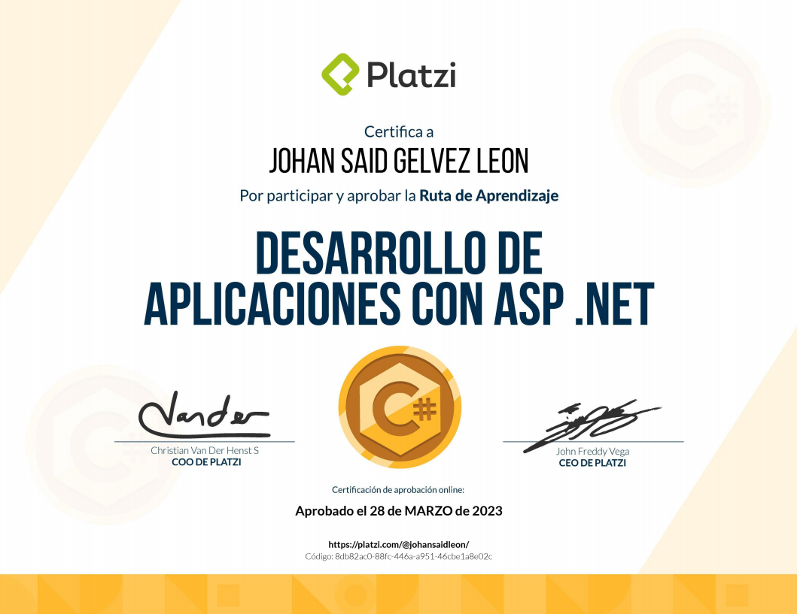
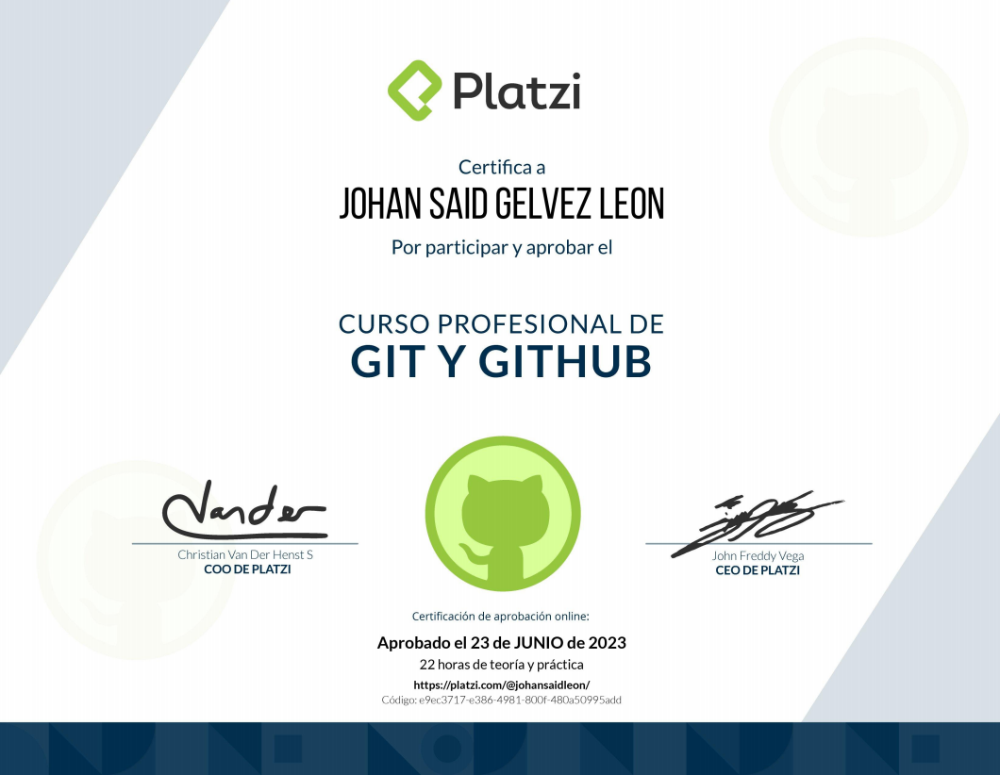
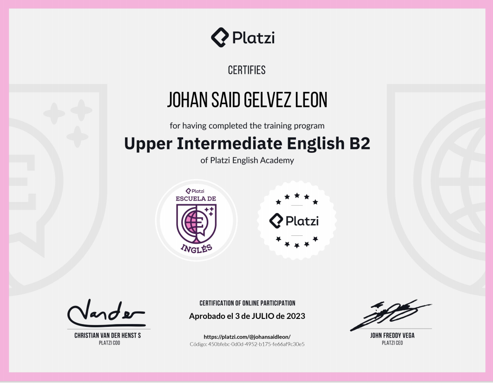

$ whoami
Johan Said Gelvez León
$ cat perfil.txt
Estudiante de Ingeniería de Sistemas — décimo semestre, UNIMINUTO
Bogotá, Colombia · gradúa febrero 2027
$ stack --list
Angular · Express.js · SQL Server · Python · redes & ciberseguridad
$ ▌
~/sobre-mi
Soy estudiante de décimo (y último) semestre de Ingeniería de Sistemas en la Universidad Minuto de Dios (UNIMINUTO), Bogotá, con graduación proyectada para febrero de 2027. Actualmente hago mi práctica profesional en Adecco y trabajo en paralelo como desarrollador freelance para clientes propios.
Mi formación combina desarrollo de software con una base fuerte en redes y ciberseguridad: he trabajado con el modelo OSI en Packet Tracer, hecho talleres de hacking ético (Kali Linux / Metasploit) y análisis de brechas bajo ISO/IEC 27001. Como complemento de grado, curso un Diplomado en Seguridad de la Información.
En desarrollo web trabajo principalmente con Angular, Express.js y SQL Server, y también me muevo con Python, Java y JavaScript. Después de graduarme, mi plan es cursar la Especialización en Inteligencia Artificial de la Universidad Javeriana, aunque también evalúo continuar estudios de posgrado en Canadá (Humber, Conestoga u opciones similares).
nivel de dominio
~/experiencia
jul 2023 — ene 2026
Bogotá, Colombia. Liderazgo de equipo y operación en punto de servicio: coordinación de turnos, resolución de problemas en tiempo real y trabajo bajo presión con foco en experiencia del cliente.
ene 2025 — mar 2026
Estudio de arquitectura comercial en Panamá (fltestudio.com). SEO técnico y de contenido (Yoast, legibilidad, metadatos y slugs), mantenimiento en WordPress/Elementor y ajustes de CSS a medida.
actual
Práctica profesional en curso como parte del último semestre de Ingeniería de Sistemas, en paralelo con proyectos freelance propios.
~/habilidades
Trabajo en equipo y comunicación clara, forjadas liderando turnos y personas en un entorno de servicio de alta rotación. Me adapto rápido a nuevas tecnologías, resuelvo problemas bajo presión y gestiono bien el tiempo entre estudio, práctica profesional y proyectos freelance en paralelo.
Metodologías ágiles (Scrum, Kanban) y PMBOK aplicadas en proyectos reales de software. Administración de sistemas Windows y Linux. Diseño y análisis de redes (modelo OSI, Packet Tracer), fundamentos de hacking ético con Kali Linux/Metasploit y análisis de brechas bajo ISO/IEC 27001.





~/proyectos
Sistema de gestión para bares desarrollado con Angular 18, Express.js y SQL Server bajo metodología PMBOK + Scrum, en equipo de 4 personas (BarSoft Solutions, UNIMINUTO).
Aplicación que ayuda a estudiantes extranjeros a encontrar residencia cerca de su universidad: catálogo de habitaciones, filtros e inicio de sesión.
Sistema de monitoreo IoT vía sockets que registra y muestra en tiempo real los datos enviados por un cliente conectado.
Proyecto personal open source: dron hexacóptero pilotado a ~10 km usando red celular en vez de radio control, con Raspberry Pi 4 como companion computer.
Programa que usa la cámara del equipo para detectar presencia y bloquear la sesión automáticamente cuando el usuario se aleja.
~/contacto
¿Un proyecto en mente o una oportunidad para conversar? Escríbeme por cualquiera de estos canales.